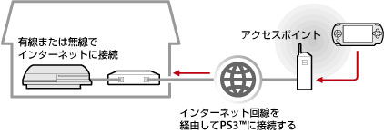
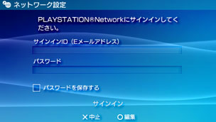

ネットワーク > リモートプレイをする（インターネット経由）
リモートプレイをする（インターネット経由）
この機能を使うには、PSP™とPS3™でシステムソフトウェアのアップデートが必要になる場合があります。
PSP™のワイヤレスLAN機能を使って、ホットスポットなどと呼ばれる公衆無線LANサービスのアクセスポイントに接続し、インターネット経由で自宅のPS3™に接続します。PS3™を接続待機状態にしておくことで、自宅から離れた場所や、海外からリモートプレイをすることができます。

ヒント
公衆無線LANサービスの利用方法や料金は、サービス事業者によって異なります。詳しくは、サービス事業者にお問い合わせください。
準備する（1） （PS3™とPSP™）
はじめてリモートプレイをするときは、PSP™をPS3™に機器登録（ペアリング）する必要があります。 （設定）＞
（設定）＞ （リモートプレイ設定）＞［機器登録］で設定してください。
（リモートプレイ設定）＞［機器登録］で設定してください。
準備する（2） （PS3™）
PS3™を、待機状態にするための設定をします。PSP™からPS3™の電源を自動で入れるために（Wake On LAN）、PS3™の［リモート起動］を有効にします。
1. |
PS3™で次の設定をする。
|
|---|---|
2. |
PS3™の電源を切る。 |
 （ユーザー）で自動ログインを設定する
（ユーザー）で自動ログインを設定する （本体の電源を切る）を選んで電源を切り、スタンバイ状態にします。本体の電源ランプが赤色に点灯していることを確認してください。
（本体の電源を切る）を選んで電源を切り、スタンバイ状態にします。本体の電源ランプが赤色に点灯していることを確認してください。ヒント
手順1の各設定について詳しくは、（設定）＞（リモートプレイ設定）＞［リモート起動］をご覧ください。
準備する（3） （PSP™）
PSP™をアクセスポイントに接続するためのネットワーク接続を作成します。インターネット経由でリモートプレイをするときは、ホットスポットなどと呼ばれる公衆無線LANサービスのアクセスポイントを利用できます。詳しくは、PSP™のユーザーズガイドをご覧ください。
リモートプレイをする
1. |
PSP™で、 |
|---|---|
2. |
［インターネット経由で接続する］を選ぶ。 |
3. |
接続先の一覧から、リモートプレイで使用するアクセスポイントの接続先を選ぶ。 |
4. |
PS3™で使っているPlayStation®NetworkのサインインIDとパスワードを入力する。  接続に成功すると、PSP™にPS3™の画面が表示されます。 |
 （ネットワーク）から（リモートプレイ）を選ぶ。
（ネットワーク）から（リモートプレイ）を選ぶ。リモートプレイを終了する
PSP™のPSボタン（HOMEボタン）を押し、［リモートプレイ終了］から［PS3™の電源を切って終了する］を選びます。
ヒント
ファイルのコピーやバックグラウンドダウンロードなど、PS3™で作業をしていてPS3™の電源を切りたくないときは、［PS3™の電源を切らないで終了する］を選びます。
インターネット経由でのリモートプレイ接続について
お使いのネットワーク機器によっては、インターネット経由でリモートプレイが成功しないことがあります。そのときは、次の情報を参考にしてください。
- （設定）＞
 （ネットワーク設定）＞［インターネット接続テスト］で、インターネットおよびPlayStation®Networkに接続できることを確認してください。
（ネットワーク設定）＞［インターネット接続テスト］で、インターネットおよびPlayStation®Networkに接続できることを確認してください。 - お使いのルーターがUPnPに対応しているときは、ルーターのUPnP機能を有効に設定してください。
- UPnPに対応していないルーターをお使いのときは、ルーターのポートフォワーディングを設定して、インターネットからPS3™への通信を許可する必要があります。リモートプレイで使用されるポート番号は、TCP : 9293です。設定方法については、ルーターの取扱説明書をご覧ください。
- ポートフォワーディングとは、特定のポート（入り口）に入ってきた信号を、指定した別のポート（出口）に通す機能です。［ポートマッピング］、［アドレス変換］などと呼ばれることもあります。
- PS3™が2台以上のルーターを経由してインターネットに接続されているときは、正しく通信できないことがあります。
ヒント
- ルーターとは、1つのインターネット回線を複数の機器で共有するための装置です。
- ルーターやインターネットサービスプロバイダーの提供するセキュリティー機能によって通信が制限される場合もあります。お使いのネットワーク機器の取扱説明書や、インターネットサービスプロバイダーの資料もあわせてご覧ください。